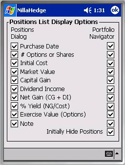

Preferences Dialogs
Preferences Dialogs
There are two preferences dialogs in NillaHedge, both launched from the Edit menu.
The Confirmation Options dialog allows you to view and modify the current value of seven confirmation options which affect behaviors in the analyzer dialogs, instrument definition dialogs, the Positions Dialog, the Portfolio Navigator, and the Option Chain Retriever.
The Positions List Options dialog allows you to view and modify the visibility of columns in positions lists that appear in the Positions Dialog and the Portfolio Navigator.
Confirmation Options
There are three groups of preferences in the Confirmation Options dialog. Each preference controls whether to require user confirmation before doing something irreversible to the database. The first group controls whether to confirm instrument (option or stock) definition updates. The second group controls whether to confirm portfolio position modifications and deletions. The third group just controls whether to confirm stock price updates in the Option Chain Retriever.
Dialog Close Events
The second and fourth check boxes indicate your desire to have NillaHedge post a confirmation dialog before updating an instrument definition when you close the dialog. The second check box affects close events in the Option Analyzer and the fourth check box affects close events in the instrument definition dialogs. The default value for both preferences is to require confirmation.
Change Symbol Events
The first and third check boxes indicate your desire to have NillaHedge post a confirmation dialog before updating an instrument definition when you change the symbol (identifier) in one of the instrument definition or analyzer dialogs. The first check box regulates change symbol behavior in the Option Analyzer dialog. The third check box dictates change symbol behavior in the instrument definition dialogs. The default value for both preferences is to require confirmation.
Delete and Modify Events
The preferences in the second group affect whether you’re queried for confirmation after pressing the Delete or Modify buttons in the Positions dialog. Confirming position deletes is probably a good idea, but it’s not a huge tragedy if you don’t confirm modify operations, because you’ll have the opportunity to re-Enter the position before quitting the Positions Dialog, but no warning will post when you close the dialog with values present in the controls above the Enter button. The default value for both preferences is to require confirmation.
Stock Price Updates
The preference in the third group merely puts you in the loop before the stock price can be updated by the Option Chain Retriever. Its default value is false, in the hope that you will wisely use exchange registered stock symbols, making such confirmations superfluous.
Option Price Updates
You might wonder, if there’s a preference for confirming stock price updates in the Option Chain Retriever, why not do the same for option price updates? First, the two types of price update don’t generate the same amount of user interaction. There is only one stock price per ‘Fetch’, so there would never be more than one confirmation posted on its account. In contrast, there might be a half-dozen or more options defined in your database that might need to have their prices updated as a result of a single ‘Fetch’. The criteria used to decide whether to update the option price is that an option definition exists, not whether it would affect your portfolio value (i.e. all definitions will attempt an update, not just those with associated positions).
As a result, it could get really irritating working through all of those confirmation dialogs, so additional logic would be required to manage possibilities like, ‘No, to all’, ‘Yes, to all’, ‘Abort’, etc. All of that complexity to prevent updates to option definitions that might have been defined with an exchange registered symbol, but didn’t represent the issue referred to by the registered symbol. It further requires that you’d recognize that the symbol you used for your special option now collides with an exchange registered option. Ultimately, it seemed unlikely that the same user that would unwisely pick an exchange standard symbol to represent something other than the normally associated option would subsequently recognize that it was being inappropriately updated. In short, we believe that option price update confirmations would probably never get used, so the opportunity to prevent automatic updates is not offered.
We therefore strongly recommended that you stick with exchange registered option symbols to define options that the rest of the world associates with those symbols.

Positions List OptionsPositions List Options are virtually self-explanatory. The preference names correspond with columns in the Positions dialog and the Portfolio Navigator. The preferences in the left column affect the visibility of columns in the Positions dialog and the preferences in the right column affect the visibility of columns in the Portfolio Navigator.
All of the preferences have the default value of enabled (checked), so all columns will be visible in each of the affected dialogs. The columns appear in the same order that they occur in the preferences list at right.
The only preference that doesn’t coincide with a column heading is the very last one on the right – ‘Initially Hide Positions’. The Portfolio Navigator has many row types; the row type at the leaf level in the hierarchy displays a position in a format almost identical to the display used in the Positions dialog.
The justifications for a
default of initially suppressing the display of positions went something like
this. 1) Positions are always displayed
in the Positions dialog. 2) You have the
option of expanding an issue’s summary node to see the positions that
contribute to that subtotal row. 3)
Portfolios would require more scrolling if the positions were visible. 4) It would be quite a bit of work to toggle
all of the issue expansion nodes off, to facilitate fitting more summary
information onto the small screen.